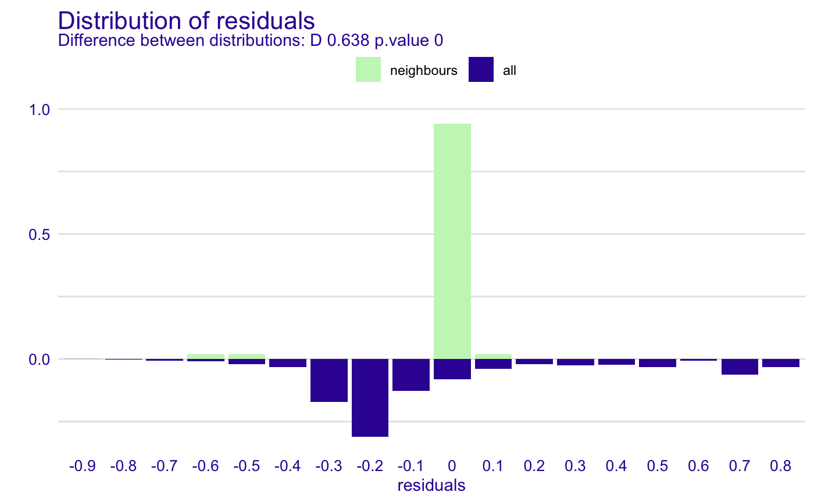
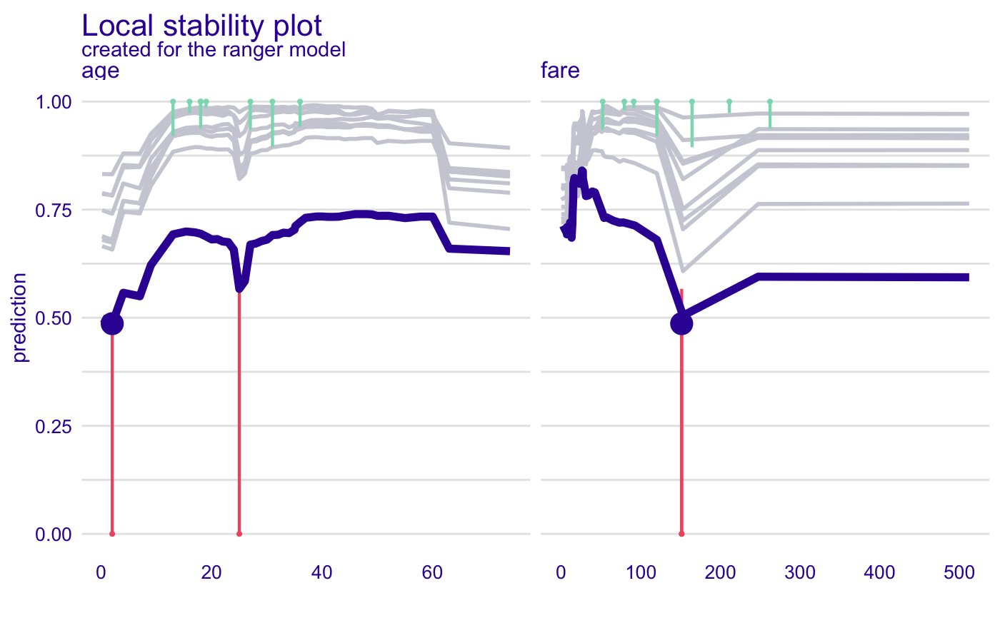
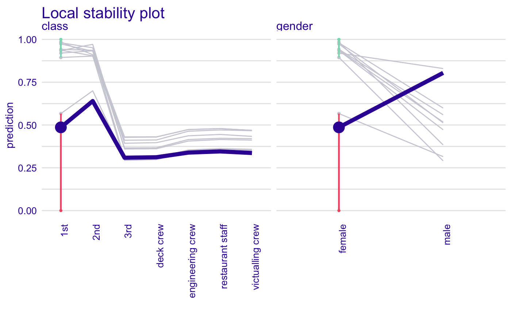

This function performs local diagnostic of residuals. For a single instance its neighbors are identified in the validation data. Residuals are calculated for neighbors and plotted against residuals for all data. Find information how to use this function here: https://pbiecek.github.io/ema/localDiagnostics.html.
predict_diagnostics( explainer, new_observation, variables = NULL, ..., nbins = 20, neighbors = 50, distance = gower::gower_dist ) individual_diagnostics( explainer, new_observation, variables = NULL, ..., nbins = 20, neighbors = 50, distance = gower::gower_dist )
| explainer | a model to be explained, preprocessed by the 'explain' function |
|---|---|
| new_observation | a new observation for which predictions need to be explained |
| variables | character - name of variables to be explained |
| ... | other parameters |
| nbins | number of bins for the histogram. By default 20 |
| neighbors | number of neighbors for histogram. By default 50. |
| distance | the distance function, by default the |
An object of the class 'predict_diagnostics'. It's a data frame with calculated distribution of residuals.
Explanatory Model Analysis. Explore, Explain and Examine Predictive Models. https://pbiecek.github.io/ema/
library("ranger") titanic_glm_model <- ranger(survived ~ gender + age + class + fare + sibsp + parch, data = titanic_imputed) explainer_glm <- explain(titanic_glm_model, data = titanic_imputed, y = titanic_imputed$survived)#> Preparation of a new explainer is initiated #> -> model label : ranger ( default ) #> -> data : 2207 rows 8 cols #> -> target variable : 2207 values #> -> data : A column identical to the target variable `y` has been found in the `data`. ( WARNING ) #> -> data : It is highly recommended to pass `data` without the target variable column #> -> model_info : package ranger , ver. 0.11.2 , task regression ( default ) #> -> predict function : yhat.ranger will be used ( default ) #> -> predicted values : numerical, min = 0.006233816 , mean = 0.3218664 , max = 0.9968959 #> -> residual function : difference between y and yhat ( default ) #> -> residuals : numerical, min = -0.802867 , mean = 0.0002903848 , max = 0.885993 #> A new explainer has been created!johny_d <- titanic_imputed[24, c("gender", "age", "class", "fare", "sibsp", "parch")] # \dontrun{ id_johny <- predict_diagnostics(explainer_glm, johny_d, variables = NULL)#> Warning: p-value will be approximate in the presence of tiesid_johny#> #> Two-sample Kolmogorov-Smirnov test #> #> data: residuals_all and residuals_sel #> D = 0.6383, p-value < 2.2e-16 #> alternative hypothesis: two-sided #>plot(id_johny)id_johny <- predict_diagnostics(explainer_glm, johny_d, neighbors = 10, variables = c("age", "fare")) id_johny#> Top profiles : #> gender age class fare sibsp parch _yhat_ _vname_ _ids_ _label_ #> 24 female 0.1666667 1st 151.16 1 2 0.4987066 age 24 ranger #> 24.1 female 2.0000000 1st 151.16 1 2 0.4863183 age 24 ranger #> 24.2 female 4.0000000 1st 151.16 1 2 0.5576668 age 24 ranger #> 24.3 female 7.0000000 1st 151.16 1 2 0.5497245 age 24 ranger #> 24.4 female 9.0000000 1st 151.16 1 2 0.6218961 age 24 ranger #> 24.5 female 13.0000000 1st 151.16 1 2 0.6928241 age 24 ranger #> #> #> Top observations: #> gender age class fare sibsp parch _yhat_ _label_ _ids_ #> 24 female 2 1st 151.16 1 2 0.4863183 ranger 1plot(id_johny)id_johny <- predict_diagnostics(explainer_glm, johny_d, neighbors = 10, variables = c("class", "gender")) id_johny#> Top profiles : #> gender age class fare sibsp parch _yhat_ _vname_ _ids_ #> 24 female 2 1st 151.16 1 2 0.4863183 class 24 #> 24.1 female 2 2nd 151.16 1 2 0.6399374 class 24 #> 24.2 female 2 3rd 151.16 1 2 0.3087624 class 24 #> 24.3 female 2 deck crew 151.16 1 2 0.3117083 class 24 #> 24.4 female 2 engineering crew 151.16 1 2 0.3387487 class 24 #> 24.5 female 2 restaurant staff 151.16 1 2 0.3457905 class 24 #> _label_ #> 24 ranger #> 24.1 ranger #> 24.2 ranger #> 24.3 ranger #> 24.4 ranger #> 24.5 ranger #> #> #> Top observations: #> gender age class fare sibsp parch _yhat_ _label_ _ids_ #> 24 female 2 1st 151.16 1 2 0.4863183 ranger 1plot(id_johny)#>#># }